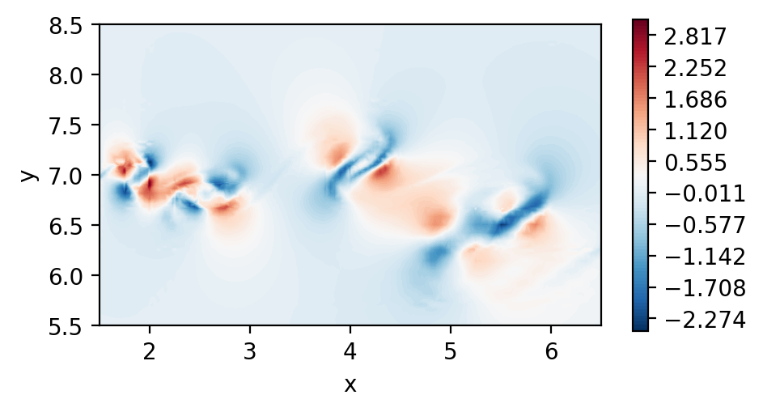
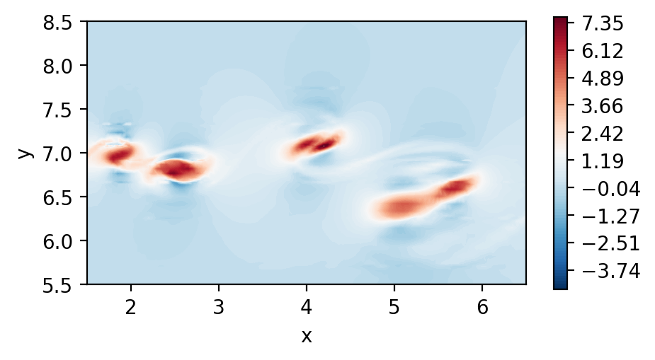

Derivation
Import general modules
[1]:
# Import required modules
from mpi4py import MPI #equivalent to the use of MPI_init() in C
import matplotlib.pyplot as plt
import numpy as np
# Get mpi info
comm = MPI.COMM_WORLD
Import modules from pynek
[2]:
from pynektools.io.ppymech.neksuite import preadnek
from pynektools.datatypes.msh import Mesh as msh_c
from pynektools.datatypes.coef import Coef as coef_c
from pynektools.datatypes.field import Field as field_c
Read the data
[3]:
data = preadnek("../data/mixlay0.f00001", comm)
Construct the mesh object from the read data
[4]:
msh = msh_c(comm, data = data)
Construct the coefficients
[5]:
coef = coef_c(msh, comm)
Construct the field data
[6]:
fld = field_c(comm, data = data)
Plot the 2D velocity field
[7]:
fig, ax = plt.subplots(figsize=(5, 2.5), dpi = 200)
c = ax.tricontourf(msh.x[:,:,:,:].flatten(), msh.y[:,:,:,:].flatten() ,fld.fields["vel"][0][:,:,:,:].flatten(), levels=100, cmap="RdBu_r")
fig.colorbar(c)
ax.set_aspect('equal')
ax.set_xlabel("x")
ax.set_ylabel("y")
ax.set_xlim([1.5,6.5])
ax.set_ylim([5.5,8.5])
plt.show()

Now check the derivatives of the velocity in x
[8]:
dudx = coef.dudxyz(fld.fields["vel"][0], coef.drdx, coef.dsdx)
dudy = coef.dudxyz(fld.fields["vel"][0], coef.drdy, coef.dsdy)
[9]:
fig, ax = plt.subplots(figsize=(5, 2.5), dpi = 200)
c = ax.tricontourf(msh.x[:,:,:,:].flatten(), msh.y[:,:,:,:].flatten() ,dudx[:,:,:,:].flatten(), levels=np.linspace(-2.5,3.1,100), cmap="RdBu_r")
fig.colorbar(c)
ax.set_aspect('equal')
ax.set_xlabel("x")
ax.set_ylabel("y")
ax.set_xlim([1.5,6.5])
ax.set_ylim([5.5,8.5])
plt.show()
fig, ax = plt.subplots(figsize=(5, 2.5), dpi = 200)
c = ax.tricontourf(msh.x[:,:,:,:].flatten(), msh.y[:,:,:,:].flatten() ,dudy[:,:,:,:].flatten(), levels=np.linspace(-4.6,7.6,100), cmap="RdBu_r")
fig.colorbar(c)
ax.set_aspect('equal')
ax.set_xlabel("x")
ax.set_ylabel("y")
ax.set_xlim([1.5,6.5])
ax.set_ylim([5.5,8.5])
plt.show()


Show again but performing dssum
In this instance, we call dssum the averaging procedure at the boundaries.
This could be modified.
[10]:
dudx_2 = coef.dssum(dudx, msh)
dudy_2 = coef.dssum(dudy, msh)
[11]:
fig, ax = plt.subplots(figsize=(5, 2.5), dpi = 200)
c = ax.tricontourf(msh.x[:,:,:,:].flatten(), msh.y[:,:,:,:].flatten() ,dudx_2[:,:,:,:].flatten(), levels=np.linspace(-2.5,3.1,100), cmap="RdBu_r")
fig.colorbar(c)
ax.set_aspect('equal')
ax.set_xlabel("x")
ax.set_ylabel("y")
ax.set_xlim([1.5,6.5])
ax.set_ylim([5.5,8.5])
plt.show()
fig, ax = plt.subplots(figsize=(5, 2.5), dpi = 200)
c = ax.tricontourf(msh.x[:,:,:,:].flatten(), msh.y[:,:,:,:].flatten() ,dudy_2[:,:,:,:].flatten(), levels=np.linspace(-4.6,7.6,100), cmap="RdBu_r")
fig.colorbar(c)
ax.set_aspect('equal')
ax.set_xlabel("x")
ax.set_ylabel("y")
ax.set_xlim([1.5,6.5])
ax.set_ylim([5.5,8.5])
plt.show()

